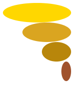
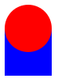
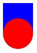

6.4
3.2 Kuvien yhdistely
procedure
(overlay k1 k2 k3 ...) → kuva
k1 : kuva k2 : kuva k3 : kuva
Luo kuvan asettelemalla argumentteina saadut kuvat päällekkäin. Ensimmäisenä
annettu kuva tulee päällimmäiseksi. Kuvat linjataan niin, että niiden keskipisteet asettuvat päällekkäin.
Example:

procedure
(beside k1 k2 k3 ...) → kuva
k1 : kuva k2 : kuva k3 : kuva
Luo kuvan asettelemalla argumentteina saadut kuvat vaakariviin, niin että niiden keskipisteet ovat samalla viivalla.
Example:

procedure
(above k1 k2 k3 ...) → kuva
k1 : kuva k2 : kuva k3 : kuva
Luo kuvan asettelemalla argumentteina saadut kuvat pystyriviin, niin että niiden keskipisteet ovat samalla viivalla.
Example:

procedure
y-sijainti : y-sijaintimäärite k1 : kuva k2 : kuva k3 : kuva
Luo kuvan sijoittamalla kaikki annetut kuvat vaakasuoraan vierekkäin, linjattuna y-sijainti argumentin mukaan.
Linjauksessa voi käyttää seuraavia y-sijaintimääritteitä: "top", "bottom", "middle"
"center" ja "baseline".
Examples:
> (beside/align "bottom" (ellipse 20 70 "solid" "lightsteelblue") (ellipse 20 50 "solid" "mediumslateblue") (ellipse 20 30 "solid" "slateblue") (ellipse 20 10 "solid" "navy"))
> (beside/align "top" (ellipse 20 70 "solid" "mediumorchid") (ellipse 20 50 "solid" "darkorchid") (ellipse 20 30 "solid" "purple") (ellipse 20 10 "solid" "indigo"))
> (beside/align "baseline" (text "hei" 18 "black") (text "ppa" 24 "black"))


procedure
x-sijainti : x-sijantimäärite k1 : kuva k2 : kuva k3 : kuva
Luo kuvan sijoittamalla kaikki annetut kuvat pystysuoraan allekkain, linjattuna x-sijainti argumentin mukaan.
Linjauksessa voi käyttää seuraavia x-sijaintimääritteitä: "left", "right", "middle"
ja "center".
Examples:
> (above/align "right" (ellipse 70 20 "solid" "gold") (ellipse 50 20 "solid" "goldenrod") (ellipse 30 20 "solid" "darkgoldenrod") (ellipse 10 20 "solid" "sienna")) 
> (above/align "left" (ellipse 70 20 "solid" "yellowgreen") (ellipse 50 20 "solid" "olivedrab") (ellipse 30 20 "solid" "darkolivegreen") (ellipse 10 20 "solid" "darkgreen"))

procedure
(overlay/xy k1 x y k2) → kuva
k1 : kuva x : reaaliluku y : reaaliluku k2 : kuva
Luo kuvan asettamalla kuvan k1 kuvan k2 päälle.
Kuvat ovat aluksi linjattu niin, että niiden vasemmat yläkulmat ovat päällekkäin, sitten
kuvaa k2 siirretään sivusuunnassa x pikselin verran ja pystysuunnassa y pikselin verran.
Positiivinen x siirtää kuvaa oikealle, negatiivinen vasemmalle. Positiivinen y siirtää kuvaa alaspäin,
negatiivinen ylöspäin.
Examples:
> (overlay/xy (circle 15 "solid" "red") 0 0 (rectangle 30 30 "solid" "blue"))
> (overlay/xy (circle 15 "solid" "red") 0 15 (rectangle 30 30 "solid" "blue")) 
> (overlay/xy (circle 15 "solid" "red") 0 -15 (rectangle 30 30 "solid" "blue")) 
> (overlay/xy (circle 15 "solid" "red") 15 0 (rectangle 30 30 "solid" "blue"))
> (overlay/xy (circle 15 "solid" "red") -15 0 (rectangle 30 30 "solid" "blue"))